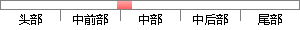

传统的C/S架构的软件在某些时候用户体验并没有B/S架构出色。
片段位置图

相似结果|
相似片段 1：软件的时候，就不会有良好的用户体验，特别是在用户已经习惯了C／S架构软件的交互即可得到结果的情况下。而引入njax异步10处理模式之后的传输模式见下图：B／S颦构基于^j肛的鼓据传输模型(异步)图
|
※ 片段修改建议 ※
近似词参考：- 时候：时辰 时刻 时间
- 并没有：并无
- 出色：超卓 精彩 卓越
系统自动生成语句：传统的C/S架构的软件在某些时辰用户体验并无B/S架构超卓。
注：本片段修改建议为系统自动生成，仅供参考。